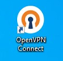
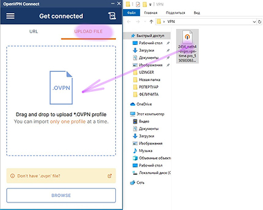
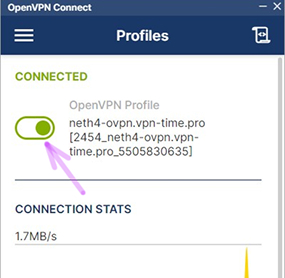
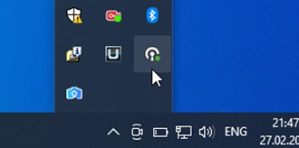

Настройка на Windows
Скачайте и установите приложение OpenVPN Connect.
После успешной установки у вас должен появиться ярлык на рабочем столе:

Зайдите в телеграм бот и сохраните сгенерированный ключ в любом месте
Запустите OpenVPN Connect. Нажмите UPLOAD FILE.
В появившуюся область перетащите скачанный ранее файл с ключом

Используйте ползунок для включения/выключения VPN
Окно можно закрыть, VPN продолжит работать

Чтобы вернуться к управлению VPN нужно найти значок Openvpn в нижней правой панели
